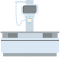
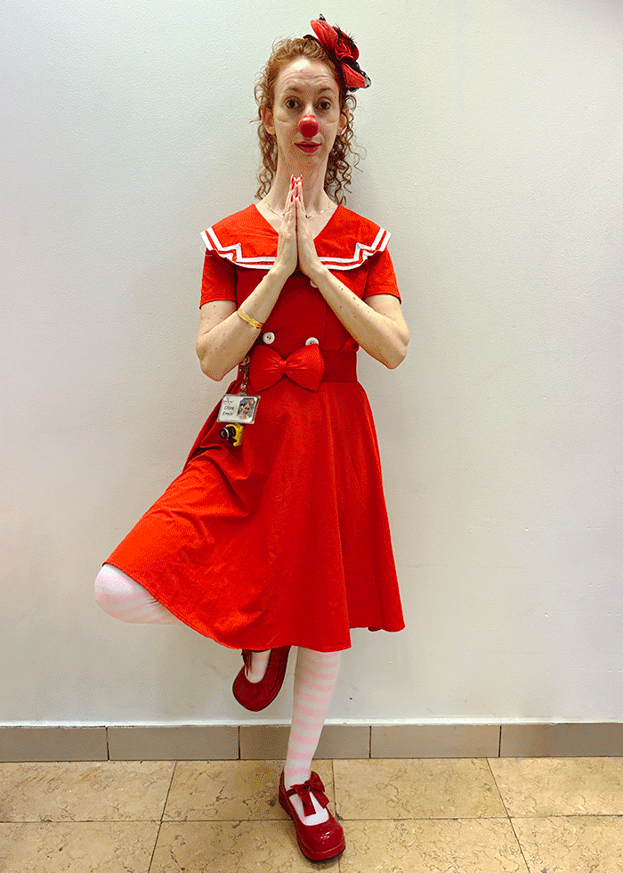
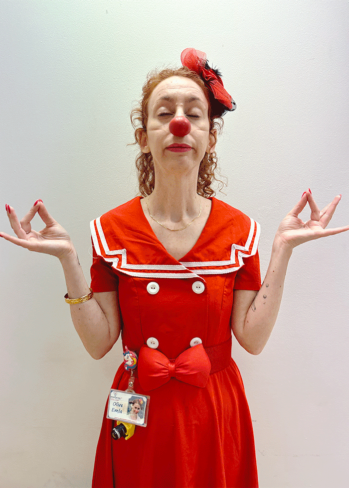
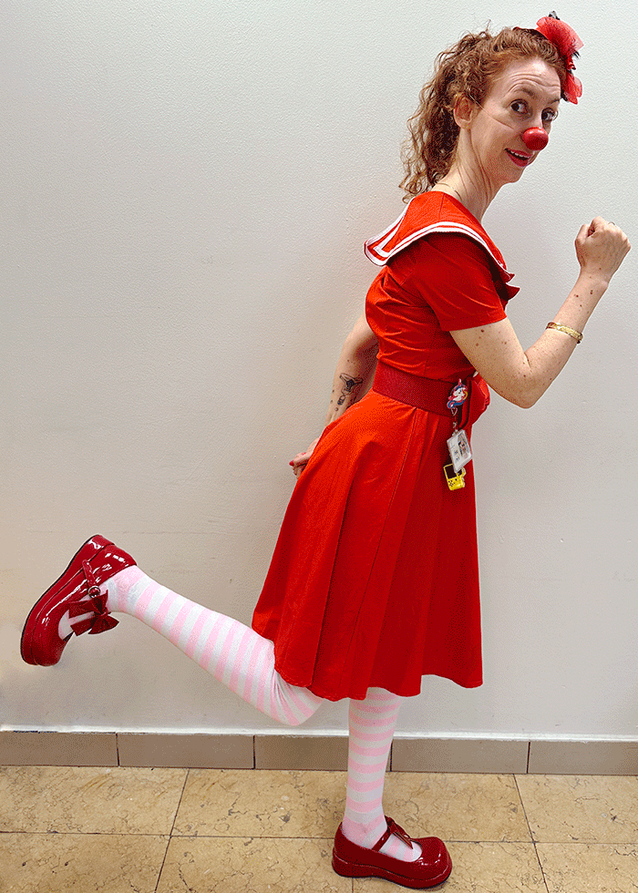

מה דעתכם על צילום "סלפי" של הגוף? ידעתם שיש מצלמות קסם שיודעות לצלם מבחוץ את מה שנמצא בתוך הגוף?

במיוחד בשבילכם אני ואוליב הליצנית צילמנו סרטון שמראה את מכון הרנטגן! בואו נצפה בו יחד!
צפייה מהנה!

MRI
הוא כמו מצלמה ענקית שסורקת ומצלמת את הגוף בעזרת מגנט חזק וגלי רדיו.
אולטרסאונד
היא בדיקה בה אפשר לראות את אברי הגוף למשל את הבטן באמצעות גלי קול.
רנטגן
הוא צילום המשתמש בקרני רנטגן, בעזרתו נוצרת תמונה ברורה של השלד והשיניים.
חשוב שתדעו כי צילומי הדימות לא כואבים בכלל!
אם תפעילו את הדמיון והסקרנות, תוכלו לדמיין שאתם בהרפתקה בחלל או אפילו בלונה פארק :)
גררו את היד למכשיר הרנטגן וגלו
גררו את הפלאפון למכשיר הרנטגן וגלו
גררו את הרגל למכשיר הרנטגן וגלו
גררו את הרכב למכשיר הרנטגן וגלו
לא משנה איזה צילום צריך לעשות, חשוב לא לזוז כדי שהתמונות לא יצאו מטושטשות.
הצמידו את כפות הידיים ועמדו על רגל אחת
מוכנים?
לחצו על השעון וספרו לאחור,
נסו להישאר באותה התנועה מבלי לזוז.

10
עצמו עיניים, הצמידו את המרפקים לגוף וחברו את האגודלים לאצבעות
מוכנים?
לחצו על השעון וספרו לאחור,
נסו להישאר באותה התנועה מבלי לזוז.
10
הרימו רגל אחת ועשו אגרוף עם היד כלפי מעלה
מוכנים?
לחצו על השעון וספרו לאחור,
נסו להישאר באותה התנועה מבלי לזוז.
10
עשו תנועה מיוחדת עם הגוף הצטלמו ותראו בעצמכם
לא רוצים להצטלם? לחצו על כפתור ״דלג״
וואו איזו תמונה!
עוד שניה ואנחנו מקבלים כוכב!
רק לפני שנסיים, תדעו שאם קיבלתם הזמנה לצילום, אתם יכולים לקבל הכנה לקראתו מהצוות החינוכי בבית החולים.
סיימנו את התחנה וזכינו בכוכב!
תרצו שנבצע את כל המשימות בתחנה מההתחלה?